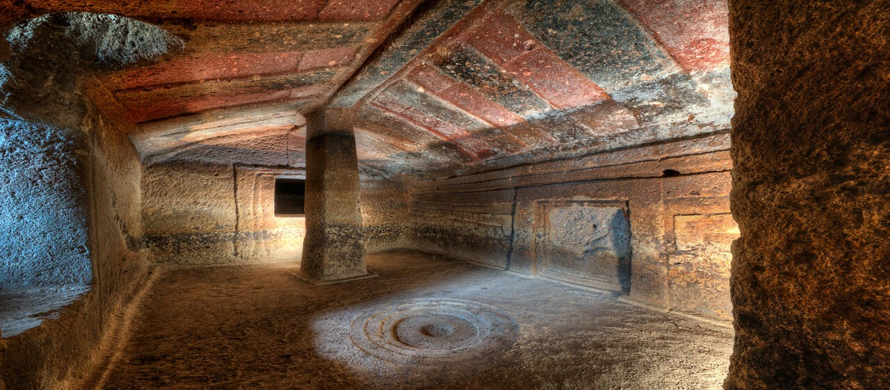
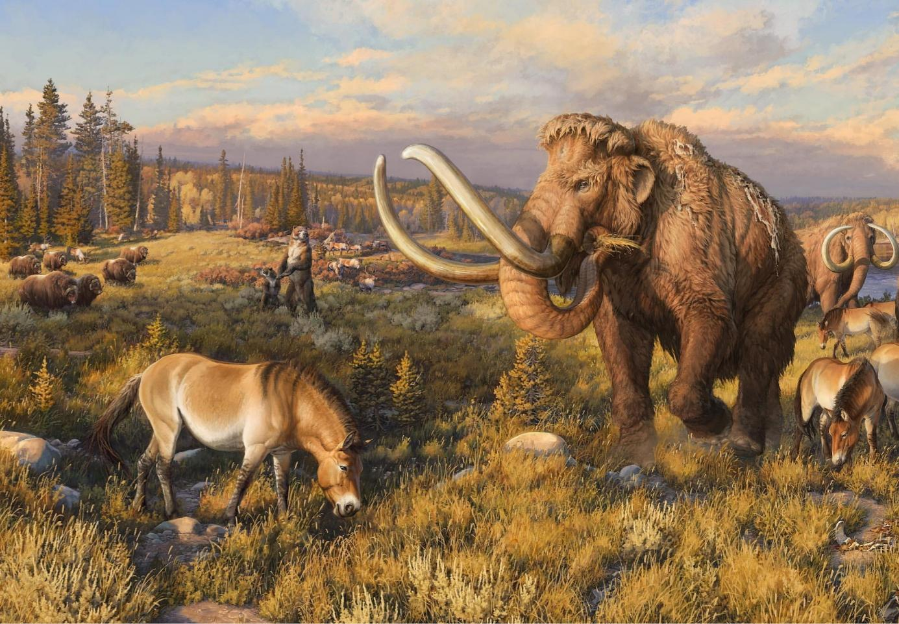

Nuraghi
Why The Nuraghi Were Built
Nothing in the annals of geology can explain this landscape
in the districts of Marmilla and Trexenta near Gesico, Sardinia. However, neolithic
farmers living on the island over four thousand years ago documented what happened. It was not pleasant. They built the massive nuraghi in response. Nuraghe
Santu Antine has walls 5 meters thick. Poor farmers would not have built these
massive monuments unless confronting extremely powerful forces.
A major precept of geology asserts the landscape is shaped over time by erosion.
However, Sardinian farmers would say that terrain alteration can occur in a flash of
light. This narrative will advance evidence explaining the patterns on Trexenta and
Marmilla and the building of the nuraghi.

Megafauna
The Death of the Megafauna
Sardinia is the key to understanding what lead to the Mega Fauna's
(MF) demise. Sardinia's landscape has been deeply scarred by plasma-earth connections from what
Dr. Anthony L. Peratt termed the 'Z-Pinch Aurora' (ZPA). From their
graphic representations in the Domus di Janas' (DdJs) and on menhirs,
neolithic farmers documented two threats from ZPAs. This article will detail
evidence about how the MF came to their demise.